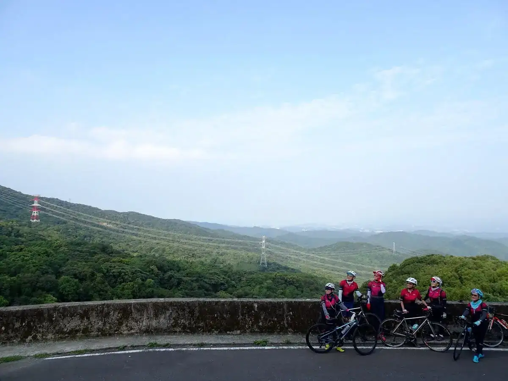
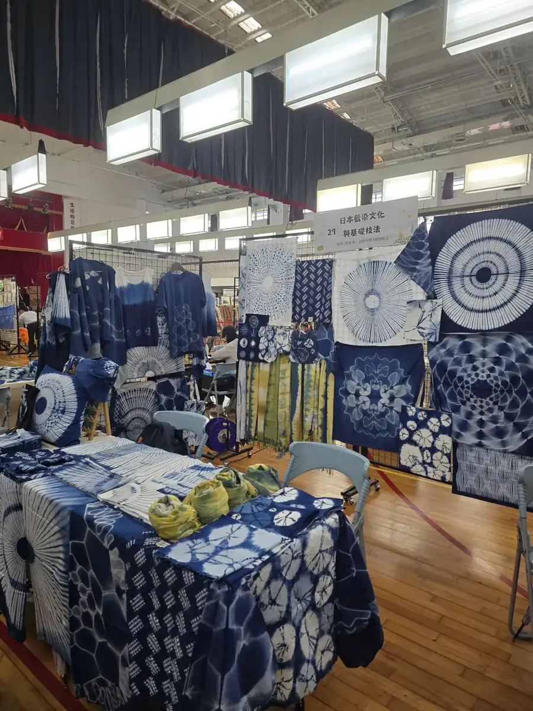
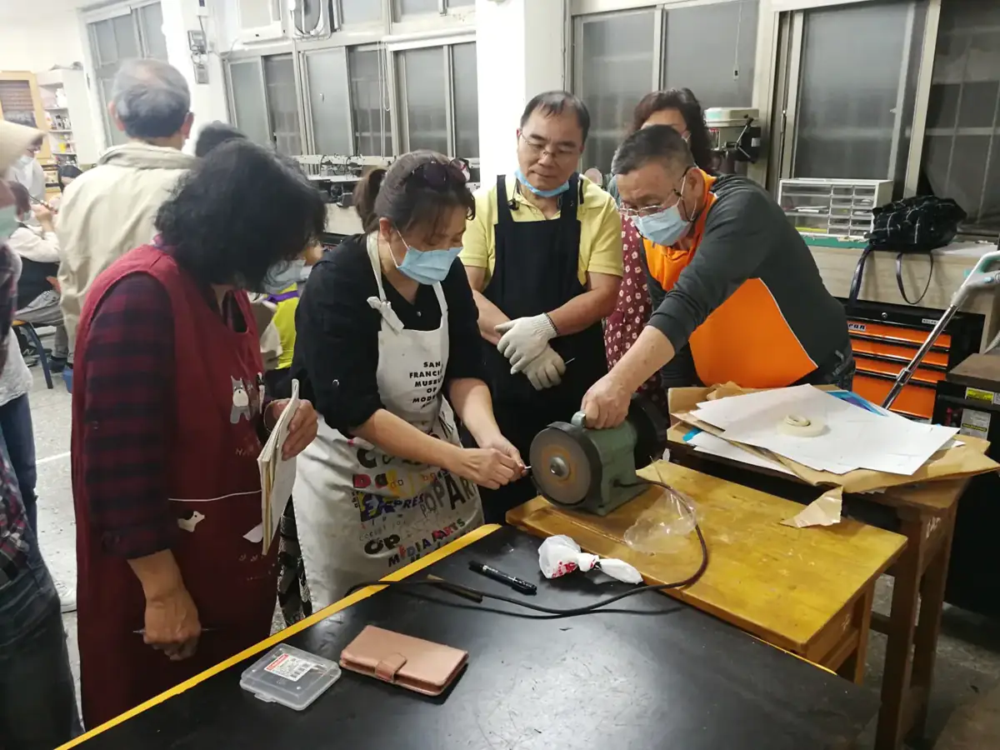
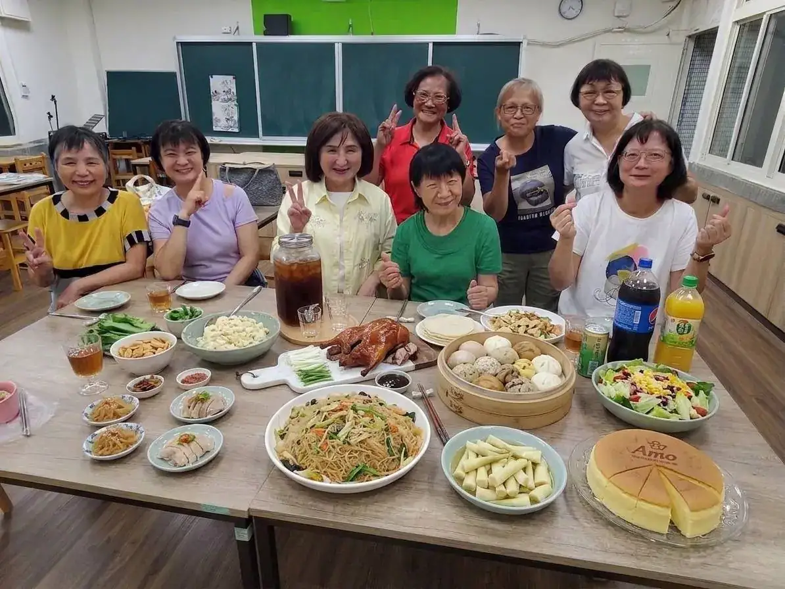

WANHUA AS A CAMPUS｜以萬華為校園
在社區裡學習
也在學習裡
重新認識社區
萬華是一座可以閱讀、探索、學習與參與的城市。社區大學在這裡串聯人、地方、知識與行動。

A CITY TO READ｜閱讀一座城市
我們不只在教室裡學習
街區的紋理、居民的記憶、日常的技藝與共同面對的議題，都是課程的一部分。每一次走讀、創作、練習與對話，都讓我們重新看見生活所在的地方。
01
LEARNING FIELDS｜學習領域
從三個方向
進入城市學習
不是課程分類，而是我們理解地方、回應生活的三種視角。

知識不是被收藏起來
而是在分享與實作中繼續生長
02
COMMUNITY FACULTY｜社區師資
專業走進社區
社區也回到課堂
萬華社大的老師不只是授課者。透過培力與共作，他們逐步成為理解地方、回應公共議題、連結社群的社區型師資。
03
LEARNING FRAMEWORK｜學習架構
讓學習連結個人
社會與永續
領域、學群、終身學習素養與 SDGs 不是首頁上的行政說明，而是每一門課背後的學習座標。
04
COMMUNITY｜社區行動
學習之後
我們一起做了什麼

技藝在彼此觀看、示範與練習之間傳遞。

學習也創造新的關係與陪伴。
FROM CLASSROOM TO COMMUNITY｜從課堂走向社區
走讀、展演、工藝、健康實踐與地方研究，讓課程的影響不只停在一學期，而是回到日常生活與社區網絡。
05
STORIES FROM THE CITY｜城市裡的學習故事
每一段學習
都為城市留下新的註解
真實的課程照片與匿名化學員心得，記錄改變如何在日常裡慢慢發生。
06
COURSE EXPLORER｜課程探索
找到下一段學習旅程
領域
學群
WANHUA KNOWLEDGE｜萬華知識